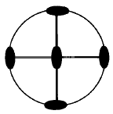
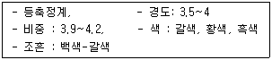
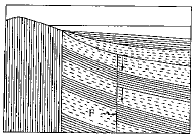
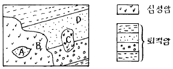
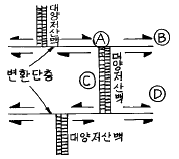
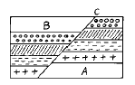
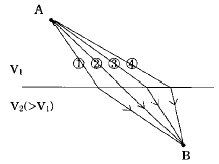
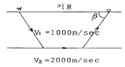
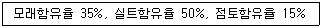
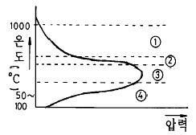

응용지질기사 (2003-03-16 기출문제)
1과목: 암석학 및 광물학
1. 다음 그림은 어떤 결정의 대칭도를 표시한 것이다. 대칭도(對稱度)의 수가 맞는 것은?

- 2회대칭축 : 4개, 대칭면 : 4개, 대칭심 : 있음
- 2회대칭축 : 3개, 대칭면 : 3개, 대칭심 : 있음
- 2회대칭축 : 4개, 대칭면 : 4개, 대칭심 : 없음
- 2회대칭축 : 4개, 대칭면 : 3개, 대칭심 : 있음
(정답률: 65%)

2. 다음 중 현정질 조직을 보일 수 있는 암석은?
- 섬록암
- 현무암
- 안산암
- 유문암
(정답률: 58%)
3. 다음에서 밀도가 가장 높은 암석은?
- 섬록암
- 유문암
- 반려암
- 안산암
(정답률: 63%)
4. 다음과 같은 성질을 가진 광물은 어느 것인가?

- 황철석
- 방연석
- 전기석
- 섬아연석
(정답률: 67%)
5. 암염은 다음중 어떤 원자 결합을 하고 있는가?
- 금속결합(metallic bond)
- 공유결합(covalent bond)
- 이온결합(ionic bond)
- 판데르바알스결합(Van der Waals' bond)
(정답률: 89%)
6. 해수에서 철화합물로부터 황철석이 침전되는데 알맞는 환경의 조건은?
- pH : 7.2 ~ 8.5, Eh : +0.⑤ ~ +0.4
- pH : 6 ~ 7.5, Eh : +0.⑤ ~ -0.2
- pH : 7.2 ~ 9, Eh : -0.2 ~ -0.5
- pH : 3 ~ 1, Eh : +0.⑤ ~ +0.4
(정답률: 73%)
7. 다음 암석에서 구성광물의 입자가 가장 작은 암석은?
- 역암
- 실트암
- 점토암
- 천매암
(정답률: 67%)
8. 화성쇄설암의 종류중 화산탄,화산암괴,용암,화산회로 되어있는 것은?
- tuff
- lapilli tuff
- volcanic breccia
- agglomerate
(정답률: 71%)
9. 다음 중 관입화성암이 아닌 것은?
- 암맥
- 용암류
- 병반
- 저반
(정답률: 65%)
10. 다음중 정(正)의 일축성 결정의 굴절율을 표시한 것은 어느 것인가? (단, nω : 상광선에 대한 굴절율, nε : 이상광선에 대한 굴절율)
- nω ＞ nε
- nω ＜ nε
- nω = nε
- nω ≥ nε
(정답률: 57%)
11. 편광 현미경에는 편광 장치가 몇 개 있는가?
- 1개
- 2개
- 3개
- 4개
(정답률: 78%)
12. 변성지층이 아닌 것은?
- 연천층군
- 상원층군
- 옥천층군
- 연일층군
(정답률: 47%)
13. 다음에서 황산 제조의 원료로 쓰이는 광물은?
- 적철광
- 중정석
- 칠레초석
- 황철광
(정답률: 89%)
14. 흑운모는 다음 어느 정계에 속하는가?
- 정방정계
- 육방정계
- 단사정계
- 삼사정계
(정답률: 72%)
15. 슈트레카이젠(Streckeisen)에 의해 제안되어 국제지질과 학연합(IUGS)에서 수용된 화성암 분류의 기준이 되는 성분을 바르게 나타낸 것은?
- 석영, 장석, 운모
- 석영, 장석, 석기
- 석영, 알칼리 장석, 사장석
- 석영, Ca 사장석, Na 사장석
(정답률: 69%)
16. 두꺼운 토탄(이탄)층의 형성은 다음 중 어떤 물질의 공급에 크게 좌우되는가?
- 이산화탄소
- 질소
- 산소
- 수소황화물
(정답률: 55%)
17. 동질다상 광물이 아닌 것은?
- 황철석과 백철석
- 황동석과 남동석
- 방해석과 아라고나이트
- 석영과 크리스토발라이트
(정답률: 38%)
18. 다음 중 접촉 변성 작용에 영향을 미치는 주요 요인이 아닌 것은?
- 마그마의 양
- 마그마의 열량
- 마그마의 화학 성분
- 마그마의 압력
(정답률: 62%)
19. Saussuritization은 어떤 암석에서 일어 나는가?
- 반려암
- 장석반암
- 유문암
- 화강암
(정답률: 19%)
20. 지각을 형성하는 광물 중 가장 많은 것은?
- 규산염 광물
- 원소 광물
- 황화 광물
- 산화 광물
(정답률: 94%)
2과목: 구조지질학
21. 판구조론에 입각한 조산운동론(造山運動論)에 의하면 히말라야산맥(Himalayas Mts.)의 생성원인은 다음 중 어떤 것인가?
- 호상열도(弧狀列島)형
- 코딜레라(Cordilleran)형
- 대륙 - 호상열도 충돌형
- 대륙 - 대륙 충돌형
(정답률: 95%)
22. 취성전단대(brittle shear zone)의 특징이 아닌 것은?
- 단층각력을 가진다.
- 같은 방향의 단층들이 존재한다.
- Cataclasite가 존재한다.
- Mylonite가 존재한다.
(정답률: 80%)
23. 다음 중 인장절리에 해당하는 것은?
- 습곡구조의 축부(軸部)에 발달한 절리
- 층리가 발달한 암석내의 규칙적인 절리계
- 공액 절리구조
- 전단 절리구조
(정답률: 57%)
24. 하천의 발달 형태가 직선 또는 직각을 이루고 있는 부분이 있다. 이는 다음 중 어느 것의 영향을 받아 형성된 것인가?
- 돔(dome) 구조
- 저반(batholith)
- 주향이동단층(strike-slip fault)
- 화산함몰체(cauldron)
(정답률: 95%)
25. 지구내부의 중심부 온도는 얼마 정도인가?
- 4000 ~ 6000℃
- 6000 ~ 8000℃
- 8000 ~ 10000℃
- 약 10만℃
(정답률: 40%)
26. 좌수향 주향이동단층 (sinistral strike-slip fault)들이 Left stepover하고 있는 지역이 있다. 이 지역에서 형성될 수 있는 것은?
- Pop-ups
- Restraining bends
- Fault-bounded wedges
- Pull-apart basins
(정답률: 59%)
27. 다음 그림은 무엇을 설명한 그림인가? (단, F는 단층이다.)

- 정단층
- 역단층
- 성장단층 (growth fault)
- 점완단층 (listric fault)
(정답률: 48%)
28. 지하에 위치하는 암염이나 마그마의 상승으로 만들어지는 지질구조는?
- 향사구조
- 돔구조
- 배사구조
- 단층구조
(정답률: 95%)
29. 다음 지질도에서 Cupola에 해당하는 부분의 기호는?

- A
- B
- C
- D
(정답률: 78%)
30. 다음 중 단층의 증거가 될 수 없는 것은?
- 단층점토
- 단층각력(fault breccia)
- 드랙(drag)
- 단층열흔
(정답률: 65%)
31. 지구의 구조운동에 대한 학설을 시대순으로 나열한 것은?
- 해양저확대설, 대륙이동설, 판구조론, 열기둥구조론(Plume Tectonics)
- 열기둥구조론(Plume Tectonics), 대륙이동설, 해양저확대설, 판구조론
- 대륙이동설, 해양저확대설, 판구조론, 열기둥구조론(Plume Tectonics)
- 대륙이동설, 해양저확대설, 열기둥구조론(Plume Tectonics), 판구조론
(정답률: 60%)
32. 그림은 대양저 산맥과 변환단층과의 관계를 나타낸 그림이다. 천발지진(淺發地震)이 가장 많이 일어나는 위치는?

- Ⓐ
- Ⓑ
- Ⓒ
- Ⓓ
(정답률: 85%)
33. 판의 이동속도를 추정하는데 이용될 수 없는 것은?
- 암석 절대연령
- 지각 열류량
- 지자기 이상
- hot spots
(정답률: 62%)
34. 압축 메카니즘에 의하여 지진이 발생하는 곳은?
- 해구(trench)
- 해령(oceanic ridge)
- 변환단층(transform fault)
- 순상지(shield)
(정답률: 86%)
35. 다음 그림에서 상반(hanging wall)을 나타내는 것은?

- A
- B
- C
- A, B
(정답률: 75%)
36. 다음 사항중 지각을 변형시키는 요인과 가장 관계가 없는 것은?
- grain size
- confining pressure
- strain rate
- temperature
(정답률: 80%)
37. 습곡을 설명할 때 사용되는 명칭과 관련이 없는 것은?
- 관(冠, crest)
- 배사(背斜, anticline)
- 향사(向斜, synclline)
- 상반(上盤, hanging wall)
(정답률: 82%)
38. 퇴적상에 있어서 몰랏세(Molasse)상은 다음 어느 것에 해당되는가?
- 선조산상
- 후조산상
- 동시조산상
- 조륙상
(정답률: 60%)
39. 퇴적암에 대한 설명중 잘못된 것은?
- 물밑에 지층이 쌓이는 면을 퇴적면 또는 성층면이라 한다.
- 퇴적암의 특징은 층리를 갖고 있는 것이다.
- 빙하 퇴적물중 빙퇴석은 층리가 많은 표석점토층을 형성한다.
- 바다 밑바닥을 흘러내린 흙탕물을 저탁류라고 한다.
(정답률: 84%)
40. 지향사(地向斜)에 대한 설명중 맞는 것은?
- 침강운동이 계속되며 두꺼운 지층이 퇴적되고 있는 하천지대(河川地帶)이다.
- 침강운동이 계속되며 엷은 지층이 퇴적되고 있는 천해지대(淺海地帶)이다.
- 침강운동이 계속되며 두꺼운 지층이 퇴적되고 있는 천해지대(淺海地帶)이다.
- 침강운동이 계속되며 엷은 지층이 퇴적되고 있는 delta 지역이다.
(정답률: 75%)
3과목: 탐사공학
41. 그림과 같이 하부층의 속도가 상부층의 속도보다 큰 구조에서, A 지점에서 B 지점까지 탄성파가 전달될 때의 파의 전파경로는 어느 것인가?

- ①번 경로
- ②번 경로
- ③번 경로
- ④번 경로
(정답률: 74%)
42. Slingram과 밀접한 관련이 있는 물리탐사는?
- Horizontal loop method
- Magnetic method
- VLF-EM method
- I.P method
(정답률: 62%)
43. 다음 전기전자탐사법 중 자연송신원을 이용하는 탐사법은?
- MT(Magneto Telluric)
- CSAMT(Controlled Source AMT)
- TEM(Transient EM)
- IP(Induced Polarization)
(정답률: 69%)
44. 해저지질이 잘 알려져 있지 않은 대륙붕 석유탐사시 제일 먼저 적용해야 할 물리탐사방법은?
- 항공자력탐사
- 항공전자(電磁)탐사
- 선박에 의한 반사탄성파탐사
- 선박에 의한 전기탐사
(정답률: 48%)
45. 석유탐사 검층 중 감마선 물리검층을 하는 주 목적은?
- 석회암층을 판별하기 위함이다.
- 세일층을 판별하기 위함이다.
- 화강암을 판별하기 위함이다.
- 대수층을 판별하기 위함이다.
(정답률: 96%)
46. 중력탐사 자료의 보정(補正)중 해머(Hammer)의 도표를 이용하여 수행할 수 있는 것은 다음중 무엇인가?
- 고도(elevation)보정
- 지형(terrain)보정
- 위도(latitude)보정
- 조석(earth-tide)보정
(정답률: 73%)
47. 탄성파가 전파될 때 구형 파면은 새로운 2차 파면을 형성하면서 계속 전파해 간다. 이런 현상과 관련된 원리 또는 법칙은 무엇인가?
- 페르마의 원리
- 호이겐스의 원리
- 스넬의 법칙
- 데카르트 법칙
(정답률: 69%)
48. 웨너(Wenner)식 전극배열에 의한 전기탐사에서 전극간격이 100m, 사용전류 4[A]에서 포텐샬 전극간 전위차가 500[㎷]로 측정되었을 때 대지의 외견(外見) 비저항은?
- 19.63 Ω-m
- 39.27 Ω-m
- 78.54 Ω-m
- 150.08 Ω-m
(정답률: 42%)
49. 그림과 같이 속도 V1 = 1000m/sec 및 V2 = 2000m/sec인 2개의 수평층에 대한 굴절파 탐사시 지표면에 도달되는 굴절파는 지표면에 어떤 각도(β)로 도달 하는가?

- 30°
- 45°
- 60°
- 90°
(정답률: 69%)
50. 디프-니이들(dip needle)은 어느 탐사시에 이용되는 기계인가?
- 탄성파탐사
- 중력탐사
- 자력탐사
- 방사능탐사
(정답률: 37%)
51. 다음 중 중력 이상이 생기지 않는 지질구조는?
- 화강암이 관입된 지질구조
- 향사구조
- 단층
- 수평적으로 편평한 다층구조
(정답률: 85%)
52. porphyry copper의 물리탐사에 가장 효과적인 방법은?
- Frequency domain(I.P법)
- 자력탐사법
- 탄성파 탐사법
- Gravity survey
(정답률: 22%)
53. 물리탐사법은 크게 능동형과 수동형 두가지로 분류할 수 있다. 다음 중 수동형 탐사법에 해당하는 것은?
- 전기비저항 탐사
- 유도분극 탐사
- 탄성파 탐사
- 자력 탐사
(정답률: 58%)
54. 광체탐사를 위한 물리탐사 조사측선으로 주로 선정하는 방법은?
- 지표지질의 경사와 직각되는 방향
- 지표지질의 주향과 직각되는 방향
- 지표지질의 주향과 나란한 방향
- 지표지질의 주향, 경사와는 관계없음
(정답률: 63%)
55. 지구화학적 공생관계에서 pathfinder로 As가 나타난 경우 어느 광상탐사에 도움이 되는가?
- Pb, Zn 광
- Au 광
- Cu 광
- 유화물광
(정답률: 81%)
56. 탄성파탐사를 할 때 탄성파를 감지하기 위하여 땅에 매몰하는 부속장치 명칭은?
- electrode
- worden
- geophone
- seismogram
(정답률: 87%)
57. 상층과 하층의 속도와 밀도가 각각 V1 = 1000m/sec, ρ1 = 2g/㎝3 및 V2 = 2000m/sec, ρ2 = 3g/㎝3인 두 층의 경계면에서의 탄성파 반사계수는? (단, 탄성파는 상층에서 하층으로 경계면에 수직으로 입사했다고 가정할 것)
- 0.2
- 0.3
- 0.4
- 0.5
(정답률: 36%)
58. 항공기나 배와 같이 움직이는 상태에서 중력을 측정 했을 때만 적용되는 중력보정은?
- 외트뵈스보정
- 부게보정
- 대기보정
- 조석보정
(정답률: 56%)
59. 지하에 부존하는 광상의 정보를 제일 상세히 제공하여 주는 탐사법은?
- 지표탐사
- 전자탐사
- 지화학탐사
- 시추탐사
(정답률: 87%)
60. 지화학탐사에서 시료로 표사를 채취할 때 가장 적당한 입도(粒度)는?
- 50 메쉬 이하
- 80 메쉬 이하
- 200 메쉬 이하
- 250 메쉬 이하
(정답률: 44%)
4과목: 지질공학
61. 토목공사에 있어서 풍화작용과 열수변질작용이 발견되는 경우 각각의 영향은 어떠한가?
- 암반의 공학적 성질은 풍화에 의해서만 좌우되므로 열수변질은 아무런 중요성이 없다.
- 대개 풍화는 심도가 증가하면 약해지지만 열수변질은 더 강해지므로 이를 유의할 필요가 있다.
- 풍화와 열수변질은 모두 심도가 증가하면 약해지므로 기초공사시 더 좋은 조건을 제공해 준다.
- 풍화는 지질학적인 서술에만 중요한 것으로 공학적으로는 열수변질만이 중요한 영향을 끼친다.
(정답률: 70%)
62. Seepage의 조절법이 아닌 것은?
- Cut - off trench
- Grouting
- Clay blankets
- Direct supply
(정답률: 23%)
63. 어떤 암석시료의 지름방향의 변형률은 0.25 이고, 축과 평행한 방향의 변형률은 -0.75였다. 포아송비는 대략 얼마인가?
- 0.1
- 0.3
- 0.5
- 3
(정답률: 50%)
64. 다음의 흙 가운데 일반적으로 자연상태 함수량이 가장 높은 것은 어느 것인가?
- 모래
- 유기질흙
- 점토
- 자갈
(정답률: 56%)
65. 지하수 탐사에는 전기 비저항치를 이용한 방법이 많이 쓰이고 있다. 다음은 전기 비저항치에 대한 개략적 설명이다. 설명이 옳지 않은 것은?
- 담수로 포화된 점토층과 사층에 있어서 전기 비저항치는 점토층이 사층보다 낮다.
- 염분은 비저항치를 낮게 한다.
- 공극율이 작은 암석일수록 비저항치는 낮다.
- 결정질암에 설치된 심정(深井)의 경우 파쇄대, 단층, 절리 등의 구조대에서는 타구간보다 비저항치가 낮다.
(정답률: 53%)
66. 연약지반의 개량공법 중 주로 점성토 지반의 압밀촉진을 위하여 채택되는 공법이 아닌 것은?
- Sand Drain 공법
- Sand Compozer 공법
- Pre-Loading 공법
- Pack Drain 공법
(정답률: 31%)
67. 절리면의 거칠기에 따른 전단 거동을 정량적으로 평가하기 위하여 사용되는 측정기구는?
- 슈미트햄머
- 클리노미터
- 점하중 장치
- 프로파일 게이지
(정답률: 80%)
68. 다음 중 암반에서의 불연속면을 공학적으로 평가하고자 할 때 측정할 요소들로만 묶여진 것이 아닌 것은?
- 절리의 연장성(Persistence), 모든 절리들의 표면적
- 절리의 주향(Strike), 단층의 경사(Dip)
- 절리군의 갯수, 절리의 틈새(Opening)
- 절리의 굴곡도(Roughness), 단층면의 만곡도(Waviness)
(정답률: 38%)
69. 댐 기초터파기 결과 연약대가 3m 폭으로 댐중심선을 횡단하고 있다. 이 댐은 중력댐으로 높이는 35m이다. 연약대 처리를 위한 콘크리트의 심도는 얼마로 하는 것이 좋은가? (단, U.S.B.R 공식적용)
- 1.⑤m
- 3.2m
- 5.21m
- 10.5m
(정답률: 58%)
70. 암석의 파괴에 관한 이론은 몇 가지가 있다. 다음중 암석의 인장시험에는 적용 불가능하며, 중간 주응력 σ2 를 고려하지 않고 있으며, 모래나 흙에 부합되는 이론으로 내부마찰각설이라고도 불리는 것은?
- 트레스카(Tresca)이론
- 스트레인 에너지(Strain energy)이론
- 모어(Mohr)이론
- 쿨롱(Coulomb)이론
(정답률: 58%)
71. 투수계수를 측정하는 시험인 Lugeon 시험시 주입압력이 4kg/cm2, 주입량이 분당 8ℓ이고 깊이가 5m일 때 이 암반의 Lugeon 값은?
- 1
- 2
- 4
- 5
(정답률: 54%)
72. 단일 절리를 통한 물의 유출에 관한 설명으로 틀린 것은?
- 단위시간동안 유출된 유량은 동수경사에 비례한다.
- 단위시간동안 유출된 유량은 간극의 3승에 비례한다.
- 단일 절리의 수리전도도는 간극의 3승에 비례한다.
- 단일 절리의 수리전도도는 물의 동점성계수에 반비례한다.
(정답률: 40%)
73. 지하수면이 달라지는 이유에 해당되지 않는 것은?
- 강우량
- 암석의 공극
- 지표의 고저
- 암석의 강도
(정답률: 65%)
74. 다음 설명 중 잘못된 것은?
- 동상이란 흙 속의 온도가 0℃ 이하로 내려가서 지표면 아래 흙 속의 물이 얼어 지표면이 부풀어 오르는 현상이다.
- 모관작용은 지하수면으로부터 물을 빨아올리는 것이다.
- 동상이 일어난 후 동결부분이 녹으면 함수비가 원래 보다 매우 커져서 지표면이 연약해지고 지지력이 크게 줄어든다.
- 동상을 방지하기 위해서는 지하수위를 높아지게 하거나 지표면 부근에 단열재를 묻든지 한다.
(정답률: 79%)
75. 다음 중 산사태 문제 해결을 위한 공학적 설계에서 가장 중요하게 다루어져야 하는 것은?
- 일축압축 강도
- 탄성계수
- 마찰각
- 탄성파 속도
(정답률: 85%)
76. 단단한 풍화잔류토(Residual soil)의 불교란 시료를 보링공을 이용해 채취코자 할 때 가장 적합한 샘플러는?
- 데니슨 샘플러(Denison sampler)
- 오스타버그 샘플러(Osterberg Sampler)
- 스프리트 바렐(Split barrel)
- 싱클코아 바렐(Single core barrel)
(정답률: 50%)
77. 터널 외형 단면보다 약간 큰 단면을 가지는 튼튼한 강재의 통을 지반 중에 밀어 넣고 진행시켜 그 선단부 지반의 붕괴를 막으면서 굴착하는 방법은?
- 침매공법
- 실드공법
- 파이프루핑
- 언더피닝
(정답률: 74%)
78. 어떤 모래층의 표준관입시험에 의한 N치 측정결과 N = 5가 되었다면 이 모래층의 상태는?
- 대단히 느슨한(Very loose)상태
- 느슨한(loose)상태
- 중간(medium)상태
- 조밀(dense)한 상태
(정답률: 82%)
79. 어떤 현장에서 채취한 흙의 입도분포를 분석하였더니 다음과 같은 결과가 나왔다. 흙의 3각좌표에 의한 분류로 보아 가장 가까운것에 속한 것은?

- 모래
- 로옴
- 사질점토
- 실트질점토
(정답률: 58%)
80. 댐의 위치를 조사할 때 고려할 사항과 거리가 먼 것은?
- 지하수면 위치
- 지하수의 존재유무
- 기반암의 물리적 특성
- 풍화의 깊이
(정답률: 65%)
5과목: 광상학
81. 지표하천 심도에서 스카른 광물을 수반한 열수광상이 생성되었을 경우 이 유형은?
- 심열수광상
- 중열수광상
- 천열수광상
- 제노서말광상
(정답률: 63%)
82. 황철석의 주요 용도는?
- 철강석 원료
- 시멘트 원료
- 황산제조
- 금의 제련용제
(정답률: 77%)
83. 다음 광물 중 가장 고온성 광물은?
- 방연석
- 석 석
- 홍은석
- 휘안석
(정답률: 57%)
84. 각 광상 시대와 특정 원소와의 공생 관계를 나열한 것이다. 관련이 없는 것은?
- 정암장 시대 - Pt, Ni, Cr
- Pegmatite 시대 - Nb, Be
- 기성시대 - Ni, Cr, Hg
- 열수시대 - Sb, Cu, Zn
(정답률: 54%)
85. 세계적으로 큰 규모의 철광상에 대한 설명 중 맞지 않는 것은?
- 퇴적광상이다.
- 선캄브리아기에 생성된 것이다.
- 미국 5대호 부근에 넓게 분포한다.
- 철광물에는 유화물과 탄산염이 많다.
(정답률: 54%)
86. 열수광상에 관한 설명 중 옳은 것은?
- 대부분 고온에서 형성된다.
- 대부분의 맥상광체는 여기에 속한다.
- 퇴적암 중에만 부존한다.
- 일반적으로 석고맥(gypsum vein)이 있다.
(정답률: 47%)
87. 다음은 열수광상의 모암변질이다. 틀린 것은?
- 엽납석화작용
- 견운모화작용
- 규화작용
- 주석화작용
(정답률: 44%)
88. 우리나라에서 카올린(Kaoline)광상의 중요 분포지는 다음 중 어느 곳인가?
- 경상남도 하동
- 경상북도 청송
- 충청북도 제천
- 강원도 삼척
(정답률: 69%)
89. 다음 광물 중 심열수광상(hypothermal deposit)과 가장 거리가 먼 것은?
- 자철석
- 자류철석
- 전기석
- 회중석
(정답률: 36%)
90. 다음중 중생대에 속하는 지층은?
- 대석회암통
- 경상계
- 양덕통
- 연일통
(정답률: 67%)
91. 다음 지층중 석탄과 가장 밀접한 관련이 있는 지층은?
- 조선계 대석회암통
- 경상계 신라통
- 평안계 사동통
- 조선계 양덕통
(정답률: 69%)
92. 심성암인 섬장암과 대등한 조성을 갖는 화산암은?
- 안산암
- 현무암
- 조면암
- 유문암
(정답률: 53%)
93. 한국의 퇴적암 지층중 캠브리아기 최하부지층의 이름은?
- 장산규암층
- 장성층
- 회동층
- 동고층
(정답률: 65%)
94. 다음 철광석 중 탄산염인 것은?
- 자철광
- 적철광
- 갈철광
- 능철광
(정답률: 54%)
95. 지각 변동의 증거가 못되는 것은?
- raised beach
- drowned land
- depressed coast
- intrusive sheet
(정답률: 59%)
96. 우리나라 서해안과 같이 굴곡이 많고 섬이 많은 해안은?
- 함몰해안
- Fiord
- Rias 식 해안
- 융기해안
(정답률: 80%)
97. 광상 형성을 규제하는 구조중 primary feature 또는 texture 에 속하지 않는 것은?
- reef structure
- Well - sorted conglomerate
- Permeable sandstone
- Ophitic texture
(정답률: 48%)
98. 아래 그림은 화성광상 생성과정 중의 온도와 증기압과의 관계를 나타낸다. 그림중 기성광상의 단계의 영역은?

- ①
- ②
- ③
- ④
(정답률: 63%)
99. 표사 광상을 형성하는 조건에 속하지 않는 것은?
- 광물의 경도
- 광물의 비중
- 광물의 자성
- 광물의 입도
(정답률: 67%)
100. 다음에서 금의 주요산지가 아닌 곳은?
- 남아프리카
- 미국
- 러시아
- 인도
(정답률: 43%)